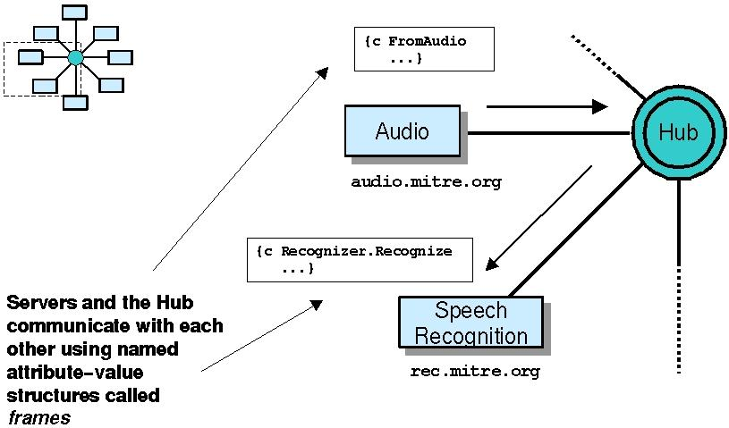
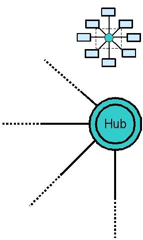
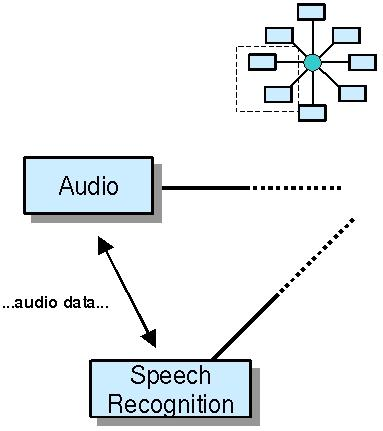

The Galaxy Communicator infrastructure is a hub-and-spoke architecture.
The distribution contains:
A Hub, implemented in C, which mediates connections between Communicator
servers (such as speech recognition and synthesis, parsing, dialogue management,
etc.)
Server libraries for constructing Communicator-compliant servers in
C (and C++), Java,
Python, and Allegro Common Lisp
Examples illustrating basic and advanced functionality for creating
servers and setting up the Hub to communicate with them
Extensive documentation (which you're now reading)
What you don't get
You don't get an end-to-end dialogue system
The Galaxy Communicator distribution is not an end-to-end dialogue
system; it provides you with tools for constructing such a system out of
a suite of servers. You can obtain the servers you need in a number of ways:
You may find some of them in the Galaxy Communicator distribution,
as noted above;
You may be able to obtain some of them from willing participants in
the Communicator program;
You may choose to write some of them yourself.
In FY02, MITRE released the first version of its Open Source
Toolkit, an open-source collection of Communicator-compliant dialogue
system components. However, this effort is in its infancy. In addition to
(or instead of) those components, you may also want to visit some of the
Communicator contributors on the links page, some
of whom may make available their Communicator-compliant dialogue components
or systems.
You don't get run-time semantic standards
The Galaxy Communicator infrastructure provides a sophisticated and general
transport layer for connecting servers and Hubs, as well as a message syntax,
but does not provide any specifications about the semantics of the
messages which travel between the servers and Hubs. That is, there's no standard
run-time API for speech recognizers, or audio devices, or parsers. While
the MITRE team has explored adapting existing APIs or message sets for use
with Communicator-compliant servers, nothing in the infrastructure endorses
any of these existing APIs or message sets.
You don't get configuration-time semantic standards
The Galaxy Communicator infrastructure provides no support or specifications
for standards for configuring individual servers. For instance, the W3C Voice Browsers group is proposing
specifications for speech recognition grammars. Such proposals are completely
compatible with the Galaxy Communicator infrastructure, but the infrastructure
does not endorse any particular proposal.
Prerequisites:
technical background, hardware and software requirements
Technical background
The core Galaxy Communicator infrastructure is written in C, and detailed
documentation is provided only for the C libraries, so familiarity with C
is fairly important. Since the Galaxy Communicator infrastructure is a distributed
infrastructure, some background in distributed processing is preferable (e.g.,
RPC, CORBA, Java RMI), since distributed processing is a fairly distinct
programming paradigm. Object-oriented programming experience is not needed
unless you'll be using the Java or Allegro Common Lisp server bindings. Finally
(and fairly obviously, since you're already reading this), a reasonable command
of English is required for understanding the documentation.
Supported platforms
The current version of the Galaxy Communicator infrastructure is actively
supported on Sparc Solaris, Intel Linux and Win32. Consult the installation instructions for more
details.
Software requirements
The Galaxy Communicator infrastructure requires the GNU gcc compiler
and GNU make. Consult the installation instructions for more
details.
Technical overview

A Communicator-compliant dialogue system consists of a process called the
Hub, together with a set of servers.
Servers and the Hub communicate with each other using named attribute-value
structures called frames. These frames
form the basis of all structured communication in the Galaxy Communicator
infrastructure.
Hub

Almost all communication between Communicator-compliant servers passes through
the Hub. The Hub has a number of significant capabilities:
The Hub maintains connections to servers (parser, speech recognizer,
backend, etc.), and routes messages among them.
The message traffic routing in the Hub can be programmed via a scripting
language that controls the flow through each dialogue turn; the default scripting
language is the MIT scripting language,
but users can opt to use no scripting language or incorporate their own.
The Hub also incorporates an internal server named Builtin to implement user-visible administrative
tasks
Server libraries

The server libraries provide a number of convenient capabilities for managing
the data and communications. Detailed documentation is provided for the C
bindings; the documentation for other programming language bindings contains
representative examples and equivalence tables.
The server libraries provide a set of commonly-available command line arguments and
support for defining dispatch functions,
which are invoked in response to frames from the Hub.
The server libraries provide support for backchannel connections for high-bandwidth
data that can be passed directly from server to server.